Spatial Induction Heads: In-Context Learning of Multidimensional Cellular Automata
Abstract
Induction heads provide a mechanistic account of in-context learning in sequential data, but existing theory largely assumes that the context relevant to a prediction forms a contiguous block. In multidimensional data, serialization breaks this assumption by scattering spatial neighbors across distant positions in the token sequence. We study how transformers overcome this routing problem in multi-dimensional stochastic and deterministic cellular automata, where each trajectory is generated by an unknown local rule and presented as a flattened sequence without an explicit coordinate-based spatial inductive bias. We introduce spatial induction heads, two-layer gather-and-match circuits in which the first layer reconstructs the relevant spatial neighborhood and the second matches the resulting configuration against earlier occurrences. We give two explicit realizations of the gather and show that the positional dimension required for spatial routing depends only on the local neighborhood and spatial dimension, not on grid volume or trajectory horizon. We further construct a matching layer which implements Bayesian counting. The end-to-end circuit can approximate the Bayesian posterior arbitrarily closely for stochastic rules and can predict exactly for deterministic rules. Empirically, trained two-layer transformers generalize to unseen rules in one and two dimensional settings, achieving near-perfect deterministic rollouts and less than 0.005 nats KL from the Bayes-optimal predictor on stochastic rules. Attention patterns and layerwise probes align with the predicted gather-and-match computation, providing mechanistic evidence for spatial induction in trained transformers.
Motivation
Question 1
How do transformers recover spatial structure from sequences?
Images and spatial trajectories reach a transformer as a one-dimensional stream of tokens. Serializing a grid this way breaks local adjacency: cells that are neighbors in space end up far apart in the sequence. Yet vision transformers with only learned absolute positional embeddings work well. They are never given row–column coordinates, and they still recover much of the underlying 2D structure. How they do this mechanistically is not understood.
What attention mechanism can recover spatial neighborhoods from a flattened token sequence?
Question 2
How do transformers use recovered structure to learn in context?
Recognizing spatial structure is only the first step. In tasks like ARC, the model sees a few input–output examples of an unknown spatial transformation, has to work out the transformation from context, and then apply it to a new input, all with its weights frozen at test time.
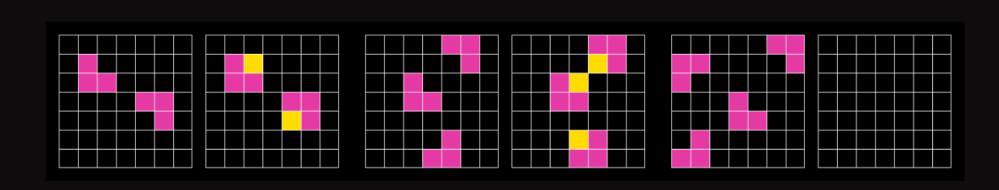
Can a transformer learn where to look during training, and infer how to predict from context?
Starting point
Induction heads, and the missing piece
Sequential data: the context is a contiguous block
The query’s context is the k tokens just before it (orange). An induction head finds the same tokens earlier (gold) and copies what followed (teal).
Spatial data: the needed tokens are scattered
Horizontal neighbors stay adjacent; vertical neighbors are W tokens away, and in d dimensions the gaps grow with the grid.
Induction heads explain how transformers find a matching context earlier in the sequence and copy what came after it, and that explanation comes with theoretical guarantees in Markov-chain settings. In spatial data, though, the tokens a prediction depends on are not a contiguous block, they are not next to the query, and their positions follow a structure the sequence never shows. This leaves three questions:
Cellular automata: a controlled setting for spatial ICL
Spatial structure
Each cell’s next state depends on a fixed local neighborhood.
In-context learning
An unknown update rule is shared across a trajectory and changes between trajectories.
A precise theoretical target
We can write down the optimal predictor and ask whether a two-layer transformer can implement it.
The model gets only the flattened trajectory, with no description of the rule, and has to predict every next cell. Inputs are cell-state tokens plus row and time separators. Positions come from a learned absolute positional table, as in ViT, and the model is never given row–column coordinates.
Simple local rules, very different dynamics
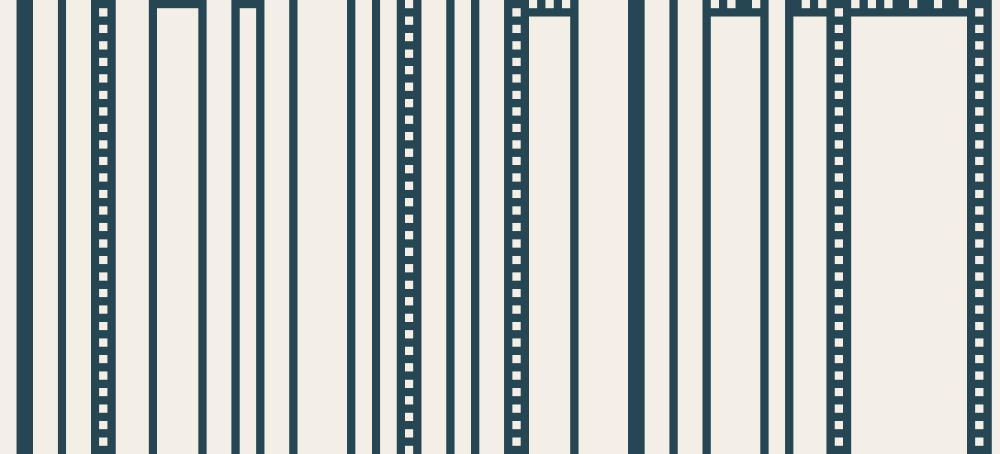
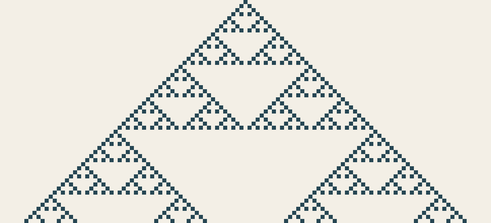
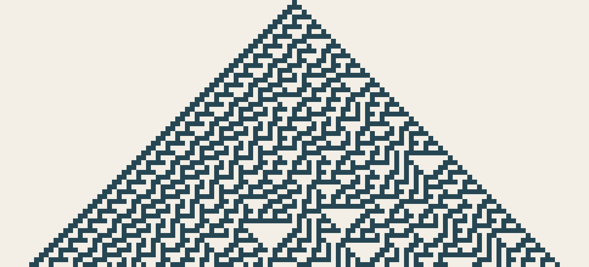
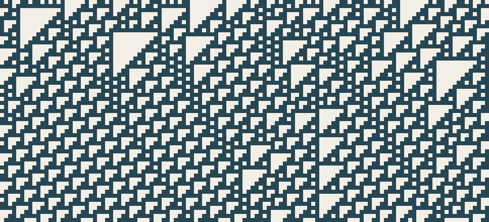
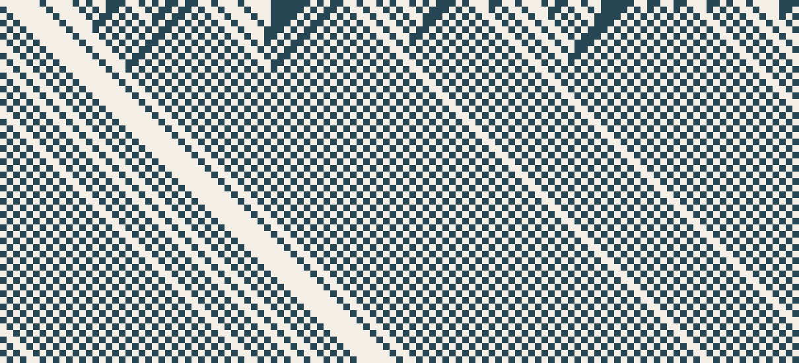
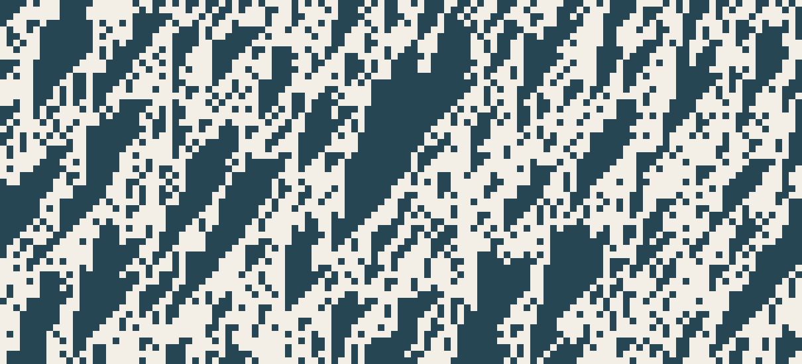
Every panel uses the same three-cell neighborhood; only the rule table f changes. Each trajectory in our task gets a fresh f.
1D elementary, k = 3
256
deterministic rules
2D von Neumann, k = 5
232
deterministic rules
2D Moore, k = 9
2512
deterministic rules
Stochastic rules form a continuum: each trajectory draws its own kernel f from a Dirichlet prior.
What is the best possible prediction?
The kernel is drawn from a Dirichlet prior and never shown to the model. The optimal predictor has a closed form: count earlier occurrences of the query’s neighborhood configuration c, and how often each state y followed it.
P(y | c, context) = (nc,y + α) / (nc + Vα)
For deterministic rules, a single earlier occurrence pins down the outcome. For stochastic rules, repeated occurrences estimate its distribution. If c hasn’t appeared yet, the context says nothing about f(· | c) and the best answer is the prior mean 1/V.
The spatial induction head: gather, then match
Layer 1
The gather
At every token, assemble the states of all routing cells: the parents that produced this cell (offsets DK) and the parents of the cell it must predict next (DQ = DK + ûd).
Layer 2
The match
Compare the query configuration (at DQ) with each earlier token’s parent configuration (at DK), and average the states that followed the matches. This is Bayesian counting.
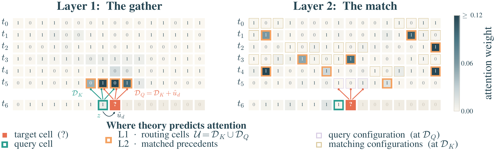
Theorem (informal)
A two-layer transformer can infer an unknown cellular-automaton rule from a serialized trajectory by gathering spatial neighborhoods and matching them to earlier examples. On queries whose neighborhood configuration has already appeared in context with an observed outcome, it achieves exact next-state prediction for deterministic rules, and an arbitrarily accurate approximation of the Bayesian posterior predictive for stochastic rules. The required width depends only on the neighborhood size, number of cell states, and spatial dimension, not on grid size or trajectory length.
Two ways to build the gather
| I: Dedicated heads | II: Shared head + MLP | |
|---|---|---|
| Layer-1 routing | One head per offset | One head gathers all offsets |
| Layer-1 MLP | None | One ReLU layer |
| Separating neighbors | Separate output blocks of the residual stream | A graph coloring of the routing set, decoded by the MLP |
| State recovery | Approximate, to any accuracy | Exact |
| Layer 2 | Match configurations and aggregate outcomes (same operation) | |
In-context learning of unseen rules
Test rules are held out from training. Weights are frozen, and the model only sees the trajectory as context.
| Task | Architecture | Deterministic | Stochastic | |
|---|---|---|---|---|
| TF cell acc ↑ | AR cell acc ↑ | AR KL (nats) ↓ | ||
| 1D, V = 2, k = 3 | Shared-head | 1.0000 | 0.9999 | 0.0019 |
| Dedicated-heads | 1.0000 | 1.0000 | 0.0044 | |
| 1D, V = 3, k = 3 | Shared-head | 1.0000 | 1.0000 | 0.0026 |
| Dedicated-heads | 1.0000 | 1.0000 | 0.0004 | |
| 2D von Neumann, V = 2, k = 5 | Shared-head | 1.0000 | 1.0000 | 0.0013 |
| Dedicated-heads | 1.0000 | 0.9999 | 0.0038 | |
Deterministic: near-perfect autoregressive prediction, with 99.99–100% cell accuracy.
Stochastic: the predictive distribution stays within 0.005 nats KL of the Bayes-optimal (k-gram) posterior predictive.
TF = teacher-forced; AR = autoregressive rollout. Every evaluation prefix contains every neighborhood configuration, so each scored query is resolvable. AR KL = DKL(qk-gram ‖ qmodel) along the model’s rollout.
Do trained models use the predicted mechanism?
They attend to the predicted positions, and depend on them
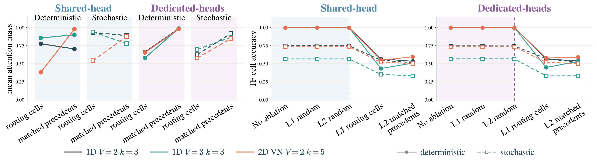
Neighborhoods and predictions become decodable at the predicted layers
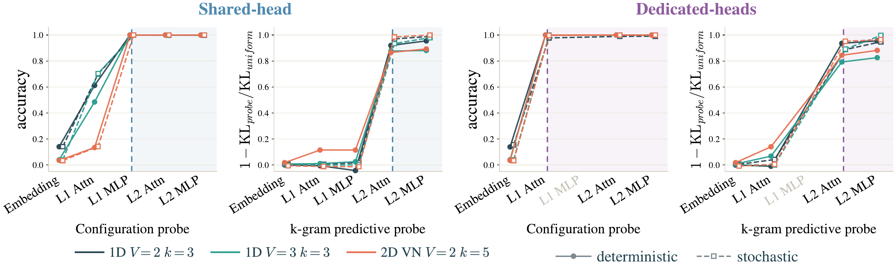
The same stages, visualized
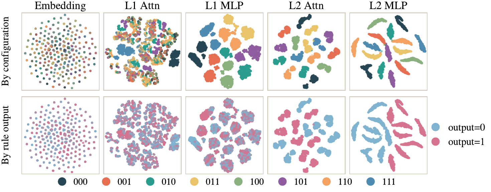
Takeaways
How do transformers recover spatial structure from sequences?
Layer 1 routes attention using relative positions and gathers the relevant spatial neighbors.
How do transformers use recovered structure to learn in context?
Layer 2 retrieves earlier examples with matching neighborhoods and aggregates their outcomes to predict the next state.
Can we theoretically construct a minimal transformer that does both?
Yes. Two layers suffice for gather-and-match, with width independent of grid size and trajectory length. It predicts exactly for deterministic rules and arbitrarily close to the Bayesian posterior for stochastic rules.†
Do trained models exhibit the predicted mechanism?
Near-perfect deterministic rollouts and stochastic KL < 0.005 on unseen rules. Attention ablations and layerwise probes support the predicted mechanism.
† For neighborhood configurations observed in context.